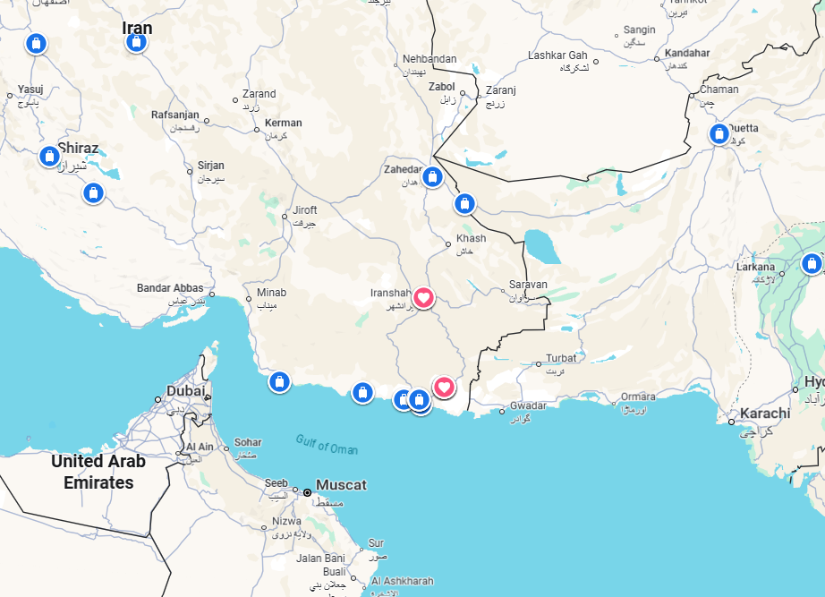
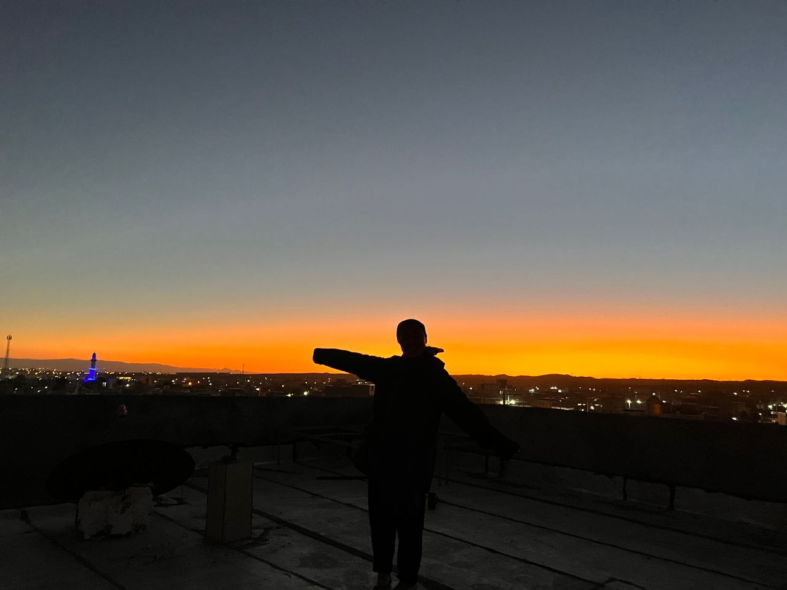
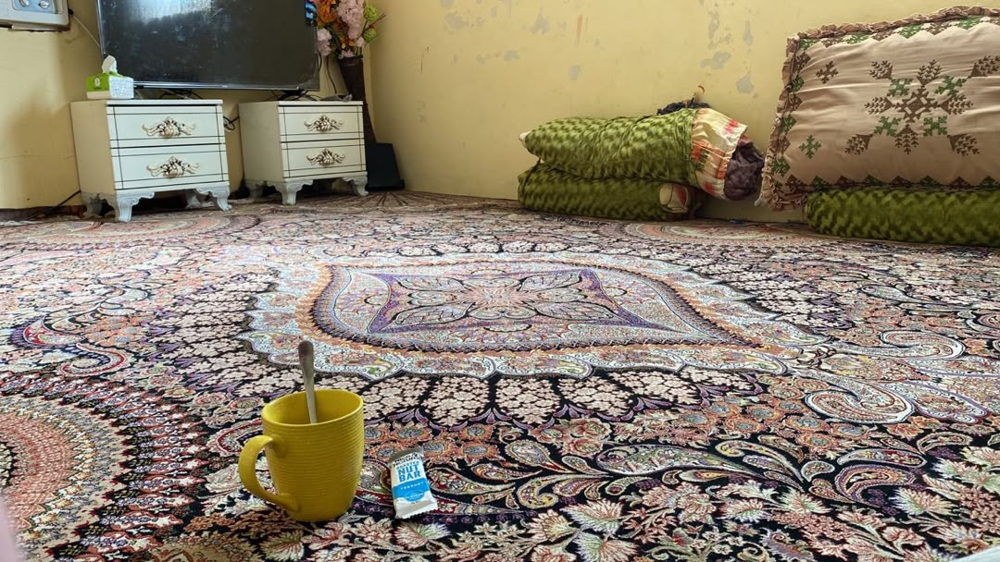

Real Story · 中文
一切好像都在回应我的 calling。
在进入 Iran 之前，我其实一个人都不认识。 我只是一直想着：我想在 Iran 过冬，大概待两个月。 因为如果我太早进入 Europe，就需要换 winter tyre。 可是我的 tyre 是 sponsored 的，我不想浪费这个机会，也不想太早进入欧洲冬天。
所以我来到 Iran 的时候，心里其实只有一个很简单的愿望： 希望这条路可以让我安全地待下来，等冬天过去一点。 但是我没有安排好一切，也没有什么很强的计划。 我只是在路上，一步一步等回应。
后来，Zahedan 的 house owner 告诉我，他在 Chabahar 有一间 old house，我可以去那里住。 这句话一出现，Iran 的冬天就好像开始打开了。
03/01/2024 之后，我先开到 Iranshahr，在他太太的姐姐家 overnight。 05/01/2024 到 07/01/2024，我停留在 Iranshahr。 那里的黄昏很漂亮，我也拍下了那张 rooftop sunset。 所以地图上 Iranshahr 有一颗 love。


Chabahar · Old House
The first house opened, but it was not yet the final home.
From 08/01/2024 to 13/01/2024, I stayed at the old house in Chabahar. It gave me a place to stop, but it was not completely quiet. The children nearby kept disturbing me and calling, “Tuzi! Tuzi!”
It was funny, but also tiring. I was trying to rest, settle, and protect my energy after many hard road days. So the old house became a temporary shelter, but not the final answer yet.

Iran Family · The Big Gate
Then the neighbour opened the real winter home.
After that, the neighbour with a big gate offered me a place to stay with them. From 14/01/2024 until 19/02/2024, I stayed with them. That became my real Iran winter shelter.
I still miss them. It was not just accommodation. It became family. A country that I entered without knowing anyone gave me a house, a gate, a family, and a place to wait out the winter.
Sob sob… I miss my Iran family.
English Memory Summary
Before Iran, Tuzi knew no one.
Before entering Iran, Tuzi knew no one there. She only hoped to spend the winter in Iran, because entering Europe too early would require changing to winter tyres, and her tyres were sponsored. She did not want to waste that opportunity.
In Zahedan, a house owner told her that he had an old house in Chabahar where she could stay. After 03/01/2024, she drove to Iranshahr and stayed at his wife’s sister’s house before heading to Chabahar. She stayed at the old house from 08/01/2024 to 13/01/2024, but the children kept disturbing her by calling “Tuzi! Tuzi!”
Then the neighbour with a big gate offered her a place to stay. From 14/01/2024 to 19/02/2024, she stayed with them, and they became her Iran family.
Heart Statement
我进入 Iran 的时候，一个人都不认识。可是冬天，还是为我打开了一扇门。
我只是希望可以在 Iran 等过冬。 结果 Zahedan 给了我路线，Iranshahr 给了我过夜，Chabahar 给了我 old house， 最后，一个 neighbour family 给了我真正的家。
I entered Iran knowing no one. But one house led to another, until winter gave me a family.